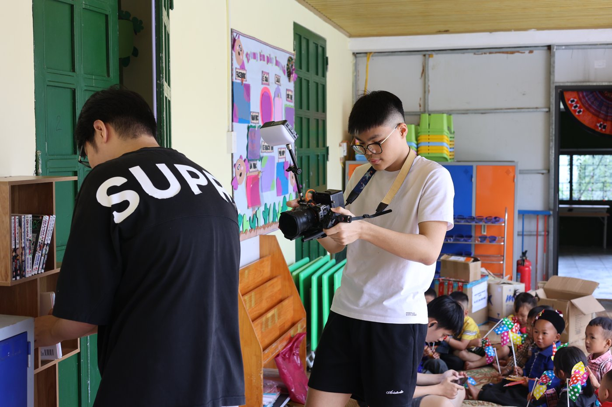
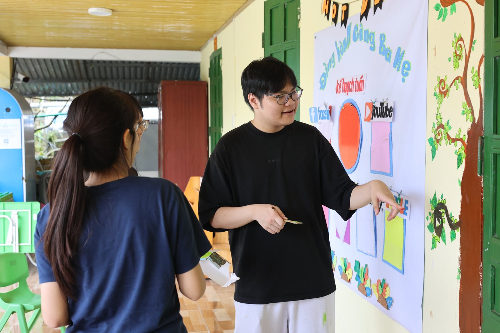

01About
Ngô Minh Khôi is a student at THPT Chuyên Khoa học Tự nhiên (Hanoi National University High School for Gifted Students) with a focus on business analytics and fintech. He currently holds leadership roles across several student clubs, co-founded two startups, and is working through a set of self-paced data/business courses alongside his coursework. This portfolio is being built up as his projects and achievements are completed and documented — content is added only once it's real and verified, nothing here is invented.
02Current project — INOVA CS
Started with embedded-systems fundamentals under the INOVA CS track (mentor: Tuyền, THPT Chuyên Khoa học Tự nhiên group) — interfacing a 16x2 LCD display with Arduino over the I2C protocol. On September 19, 2026 the project direction was set: a Fintech / Business Analytics topic on financial literacy education and predatory ("black credit") loan awareness for Gen Z.
03Leadership & clubs
The volunteer trip documented in the Community section below was run through Kindle, where Khôi leads logistics and marketing.
04Startups
A charity-fundraising startup that teaches high schoolers creative thinking, business, and teamwork skills by building and running a real bakery business. Khôi analyzes sales data, customer behavior, and demand trends to guide product and pricing decisions, runs marketing campaigns and tracks revenue/conversion/ROI, and manages the order-to-cash operating process and business reporting.
Ties directly into his current INOVA CS project direction on financial-literacy education for young people.
05Community volunteering
On a Kindle-organized student volunteer trip to a rural kindergarten, Khôi helped assemble and install classroom furniture (including a wooden bookshelf), ran a hands-on science activity for the children, presented a parent-engagement planning board, and documented the trip on camera.





06Competitions & courses
Competed (no award); certificate of participation issued, scored 270/300.
International invention/creativity competition — preparation underway through the INOVA CS track.
Self-paced courses currently in progress (Coursera):
- Business Analytics Specialization — University of Pennsylvania (Wharton)
- Python for Everybody Specialization — University of Michigan
- Google Data Analytics Professional Certificate — Google
- IBM Data Analyst Professional Certificate — IBM
07Research
ESG Performance and Profitability in Vietnamese Agricultural Firms: Panel and Predictive Evidence
Nearing completion (originally targeted for around August 2026) — not yet published. This entry will be updated with a link once the paper is finalized.